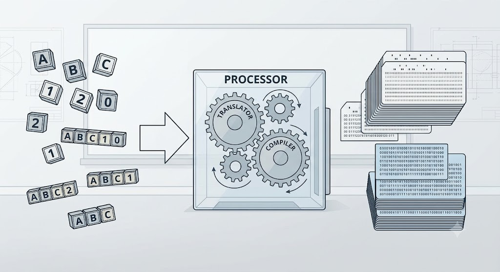
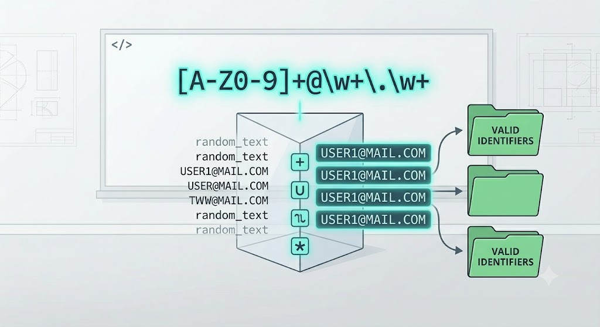
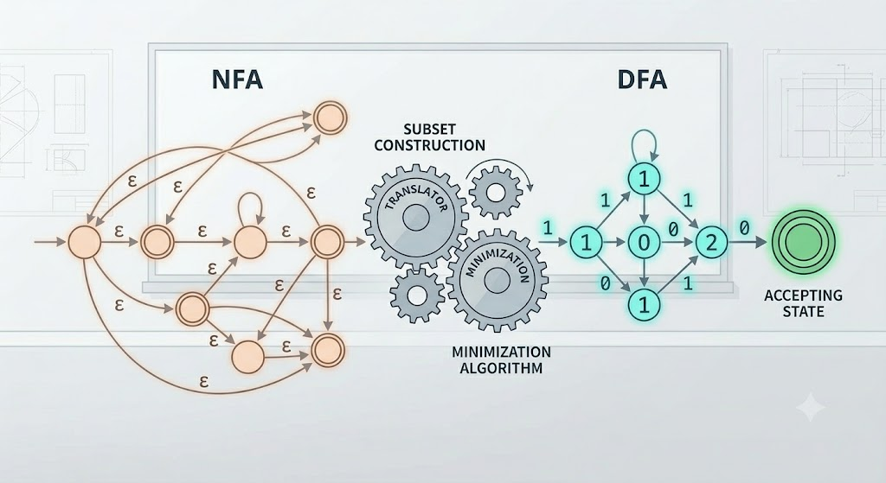
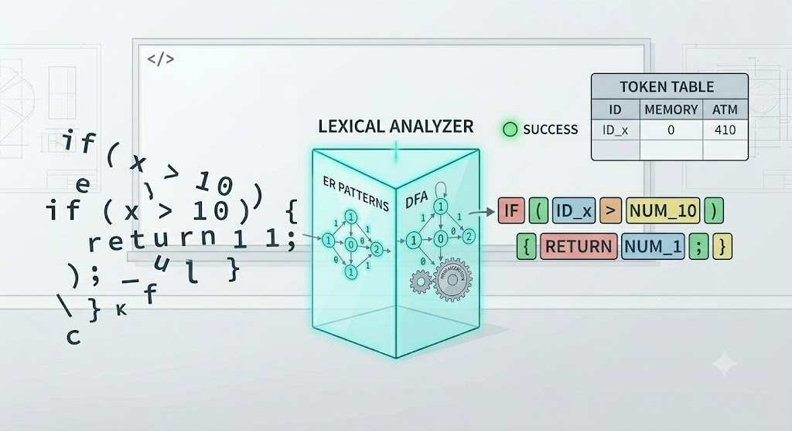
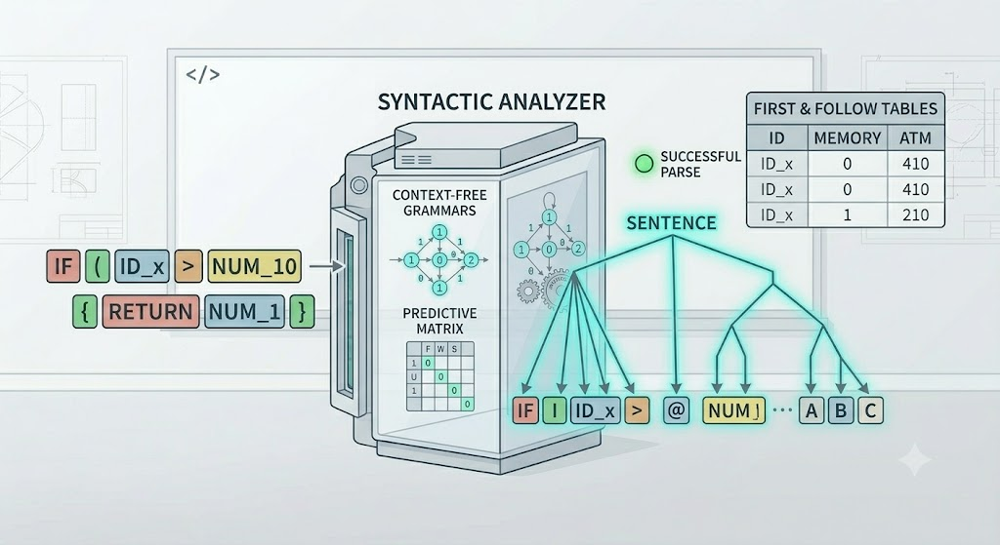
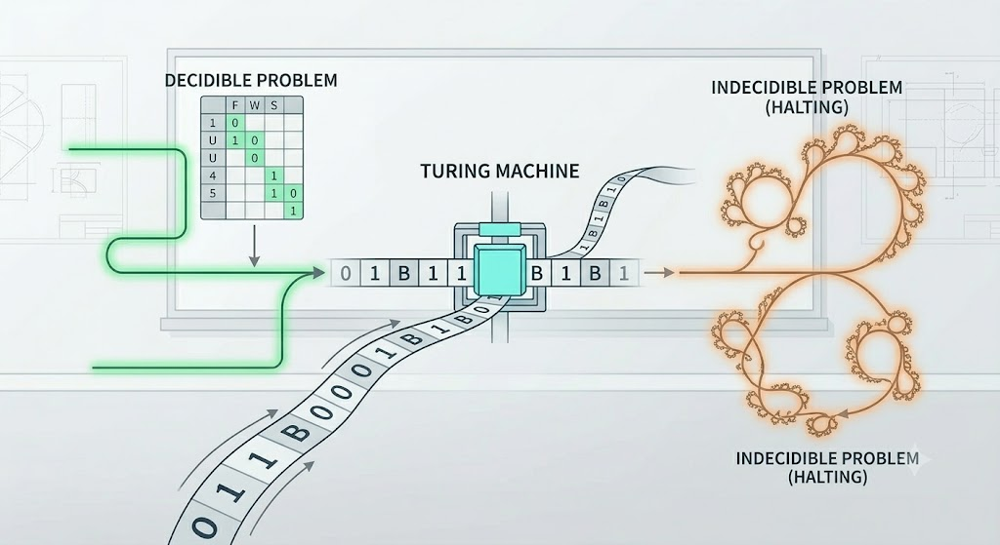

Bienvenidos a Lenguajes y automatas
Esta plataforma web tiene como proposito principal el que tanto alumnos como docentes puedan manejar de manera libre, para revisar el contenido de la materia de Lenguajes Y Automatas.
Aquí se encontraran todos los temas refrentes a cada unidad correspondiente, estructurados por temas para facilitar el estudio, la consulta rápida y promover el aprendizajeLa estructura lógica de este entorno se basa en fomentar el autoaprendizaje y que cada alumno encuentre eficiente y atractiva esta manera de apoyo, estuduiando a su propio ritmo.
Para que podamos visualizar el contenido de las 6 unidades, dirígete al apartado de ver unidades o haz clic en "Unidades del Curso".
Unidades del temario

Unidad 1
Introducción a la Teoría de Lenguajes Formales

Unidad 2
Expresiones Regulares

Unidad 3
Autómatas Finitos

Unidad 4
Analisis lexico

Unidad 5
Analisis sintactico

Unidad 6
Maquinas de Turing
Unidad 1: Introducción a la Teoría de Lenguajes Formales
1.1 Alfabeto (Σ)
Es un conjunto finito y no vacío de símbolos o caracteres lógicos básicos. Tambien llamados letras o caracteres;es la base para construir cadenas dentro de un lenguaje.
En la teroria de lenguajes y automatas, el alfabeto representa el conjunto de simbolos de entrada que una maquina puede leer o procesar. ejemplo: el alfabeto binario Σ = {0, 1}) Alfabeto decimal Σ ={1,2,3,4,5}.1.2 Cadenas
Una secuencia finita de símbolos tomados de un alfabeto determinado. Es un bloque de cosntruccion fundamental sobre el cual se estructuran los lenguajes formales y algunos programas. La longitud representa la cantidad de caracteres que contiene. La cadena vacía se denota formalmente como ε.
Partes de una cadena: a partir de una cadena podemos extraer segmentos mas cortos. Subcadenas:cualquier secuencia de simbolos contiguos dentro de a cadena. Cadena inversa: los simbolos leidos de izquierda a derecha. Prefijo: Secuencias obtenidas al eliminar 0 o mas simbolos al final de la cadena. Sufijo: Secuencias obtenidas al eliminar 0 o mas simbolos al inicio de la cadena. OPERACIONES con cadenas: -Concatenacion de cadenas -Potencia de cadenas -Cerradura de Kleene o estrella -Cerradura positiva .1.3 Lenguajes, tipos y herramientas
Un lenguaje es un conjunto de cadenas formadas a partir de un alfabeto común.Estos lenguajes formales son alalizados y procesados mediante automtas y gramaticas fomales.
Los lenguajes se clasifican segun la jerarquia de Chomsky: -Lenguajes regulares:cadenas reconocidas por automatas finitos. Lenguajes libres de contexto: reconocidos por automatas de pilas, que modelan la estructura d eun bloque y se describen gramaticamente. lenguajes recursivos: reconocidos por la maquina de mayor poder computacional como lo es la maquina de turing. Herramientas: Analizador lexico: lee las secuencias de caracteres y los agrupa. Analisadores sintaticos:estructuras tukens en arboles.1.4 Estructura de un traductor
Programas complejos encargados de recibir un programa escrito en un lenguaje fuente y transformarlo a un lenguaje destino equivalente.Se divide estructuralmente en dos etapas: Analisis y sitesis.
Analisador lexico. Un traductor es un programa que tiene como entrada un texto escrito en un lenguaje (lenguaje fuente) y como salida produce un texto escrito en un lenguaje (lenguaje objeto) que preserva el significado de origen. Ejemplos de traductores son los ensambladores y los compiladores. Un traductor se define como un programa que traduce o convierte desde un texto o programa escrito en un lenguaje fuente hasta un texto o programa equivalente escrito en un lenguaje destino produciendo, si cabe, mensajes de error. Los traductores engloban tanto a los compiladores (en los que el lenguaje destino suele ser código máquina) como a los intérpretes (en los que el lenguaje destino está constituido por las acciones atómicas que puede ejecutar el intérprete). Fases del compilador o traductor: Generador de Código Intermedio: Crea una representación abstracta del código fuente (similar a código ensamblador simplificado) que es independiente de la máquina. Optimizador de Código: Mejora el código intermedio o el código destino para que sea más rápido o ocupe menos memoria. Generador de Código: Traduce la representación intermedia al lenguaje destino final (código máquina, bytecode, o código en otro lenguaje). Ejemplo: el como se lee la siguiente cadena int x = 5; [Palabra reservada: int] [Identificador: x] [Operador: =] [Número: 5] [Delimitador: ;]1.5 Fases de un compilador
Los compiladores son programas de computadora que traducen de un lenguaje a otro. Un compilador toma como su entrada un programa escrito en lenguaje fuente y produce un programa equivalente escrito en lenguaje objeto.
Se dividen en etapas analíticas (Frontend: análisis léxico, sintáctico y semántico) y etapas sintéticas (Backend: generación de código intermedio, optimización y generación de código objeto). • Analizador léxico: lee la secuencia de caracteres de izquierda a derecha del programa fuente y agrupa las secuencias de caracteres en unidades con significado propio (componentes léxicos o “tokens” en ingles). • Análisis sintáctico: determina si la secuencia de componentes léxicos sigue la sintaxis del lenguaje y obtiene la estructura jerárquica del programa en forma de árbol, donde los nodos son las construcciones de alto nivel del lenguaje. Análisis semántico: realiza las comprobaciones necesarias sobre el árbol sintáctico para determinar el correcto significado del programa.Nos limitaremos al análisis semántico estático (en tiempo de compilación), donde es necesario hacer uso de la Tabla de símbolos, como estructura de datos para almacenar información sobre los identificadores que van surgiendo a lo largo del programa. El análisis semántico suele agregar atributos (como tipos de datos) a la estructura del árbol semántico. • Generación y optimización de código intermedio: la optimización consiste en la calibración del árbol sintáctico donde ya no aparecen construcciones de alto nivel. Generando un código mejorado, ya no estructurado, más fácil de traducir directamente a código ensamblador o máquina, compuesto de un código de tres direcciones (cada instrucción tiene un operador, y la dirección de dos operándoos y un lugar donde guardar el resultado), también conocida como código intermedio. • Generación de código objeto: toma como entrada la representación intermedia y genera el código objeto. La optimización depende de la máquina, es necesario conocer el conjunto de instrucciones, la representación de los datos (número de bytes), modos de direccionamiento, número y propósito de registros, jerarquía de memoria, encauzamientos, etc.Unidad 2: Expresiones Regulares
2.1 Definición formal de una ER
Definición formal de una ER: Notación matemática que define un lenguaje regular utilizando constantes simbólicas (como el conjunto vacío o la cadena vacía) combinadas mediante los operadores lógicos de unión, concatenación y la clausura de Kleene (*).
Una Expresión Regular (ER) es una notación matemática compacta y algebraica que sirve para definir, de manera exacta, a un lenguaje regular. En lugar de listar todas las cadenas válidas de un lenguaje (lo cual sería imposible si el lenguaje es infinito), una ER establece un patrón constructivo estructurado a partir de reglas base e inductivas. Formalmente, dada la existencia de un alfabeto $\Sigma$, las expresiones regulares se construyen bajo los siguientes tres pilares fundamentales: • Constantes simbólicas primitivas: El conjunto vacío ($\emptyset$), la cadena vacía ($\epsilon$), y cualquier símbolo individual $a$ que pertenezca al alfabeto ($a \in \Sigma$). • Operadores lógicos y de unión: Las expresiones se combinan mediante la unión (denotada como $+$ o $|$, que representa una alternativa lógica "O"), la concatenación (la unión secuencial de símbolos, como $ab$), y la clausura o cierre de Kleene ($^*$), que permite la repetición de un patrón cero o más veces. • Identidad matemática: Toda expresión regular tiene un autómata finito equivalente; matemáticamente, si $R$ es una expresión regular, entonces $L(R)$ es el lenguaje regular exacto que describe.2.2 Diseño de ER
Proceso algorítmico y lógico para construir patrones matemáticos orientados a identificar conjuntos específicos de cadenas válidas.
El Diseño de Expresiones Regulares es un proceso puramente algorítmico, lógico y deductivo. Consiste en traducir un requerimiento o restricción del lenguaje natural (por ejemplo: "todas las cadenas que inicien con 1 y tengan un número par de 0s") a una estructura matemática formal y optimizada, evitando ambigüedades. Para diseñar una ER de forma correcta, se deben seguir estos pasos y criterios lógicos: • Identificación del alfabeto y el patrón base: Determinar qué símbolos son válidos y aislar la parte obligatoria o "núcleo" que la cadena debe cumplir. • Uso estratégico de operadores: Aplicar la unión para manejar ramificaciones o decisiones lógicas alternativas, y la clausura de Kleene para modelar ciclos, bucles o elementos opcionales infinitos. • Delimitación de fronteras: Asegurar que el patrón no sea "permisivo de más" (que acepte cadenas inválidas) ni "restrictivo de más" (que rechace cadenas correctas). Se diseña pensando en los casos límite, como las cadenas de longitud mínima o la cadena vacía.2.3 Aplicacion en problemas reales
Aplicaciones en problemas reales: Implementación práctica en motores de búsqueda de texto, validaciones automatizadas de formatos (como correos o teléfonos) y filtrados de flujos de datos en ingeniería de software.Lejos de quedarse en la teoría matemática, las expresiones regulares son una de las herramientas de software más potentes y utilizadas en el día a día de la ingeniería de sistemas y la programación de aplicaciones. Al ser reconocidas eficientemente por el hardware mediante autómatas, su velocidad de ejecución es sumamente alta.
Sus principales implementaciones prácticas en el mundo real incluyen: • Validaciones automatizadas de formatos: Motores que verifican en milisegundos si los datos introducidos por un usuario en un formulario web cumplen con un estándar internacional estricto (como estructuras de correos electrónicos, números telefónicos, códigos postales o contraseñas seguras). • Motores de búsqueda y sustitución de texto: Herramientas esenciales en editores de código (como VS Code) y bases de datos para buscar patrones complejos dentro de miles de líneas de texto plano, permitiendo realizar cambios masivos y refactorizaciones mediante comandos rápidos. • Análisis Léxico en Compiladores: Es la base de herramientas como Lex o Flex. El compilador utiliza expresiones regulares para escanear el código fuente que escribe el programador, aislar los caracteres y agruparlos en categorías lógicas organizadas (tokens) antes de validar la sintaxis general.Unidad 3: Autómatas Finitos
3.1 Conceptos: Definicion y Clasificacion de Automata finito (AF)
Modelos abstractos compuestos por estados, transiciones, un estado inicial único y estados finales de aceptación. Se clasifican en Autómatas Finitos Deterministas (AFD) y Autómatas Finitos No Deterministas (AFND).
Los Autómatas Finitos son modelos matemáticos abstractos que representan sistemas lógicos con una cantidad limitada de memoria, la cual se expresa a través de un conjunto finito de estados. Su función principal es actuar como reconocedores de lenguajes regulares, procesando cadenas de caracteres símbolo por símbolo para determinar si son válidas o no. Formalmente, se clasifican en dos grandes grupos según la naturaleza de sus reglas de transición: • Autómatas Finitos Deterministas (AFD): Son aquellos donde, para cada estado y cada símbolo del alfabeto, existe una única transición posible hacia un estado siguiente. No permiten ambigüedad ni movimientos espontáneos. • Autómatas Finitos No Deterministas (AFND): Modelos más flexibles donde, desde un mismo estado y con el mismo símbolo de entrada, el sistema puede optar por múltiples estados destinos simultáneamente o realizar transiciones vacías ($\epsilon$), es decir, cambiar de estado sin consumir ningún carácter de la entrada.3.2 Conversion de un Automata Finito no determinsta (AFND) a Automata Finito Determinista (AFD)
Aplicación del método matemático de Construcción de Subconjuntos, garantizando que cualquier modelo no determinista pueda ser procesado por una computadora determinista real.
La Conversión de un AFND a un AFD es un proceso puramente algorítmico fundamentado en el Método de Construcción de Subconjuntos. Aunque los autómatas no deterministas son más fáciles de diseñar en papel debido a su flexibilidad, el hardware físico de una computadora real es intrínsecamente determinista y requiere instrucciones exactas sin ambigüedades para poder procesar la lógica. El algoritmo opera agrupando los conjuntos de estados posibles del AFND (incluyendo sus clausuras-$\epsilon$) y transformando cada uno de estos subconjuntos en un único estado lógico nuevo dentro del AFD resultante. Este método matemático garantiza una equivalencia absoluta, demostrando teóricamente que ambos tipos de autómatas poseen exactamente el mismo poder de cómputo y reconocen el mismo lenguaje regular.3.3 Representacion de ER usando AFND
Representación de ER usando AFND: Implementación del Algoritmo de Thompson para la conversión directa de expresiones algebraicas en autómatas finitos estructurales con transiciones vacías (ε).
La Representación de Expresiones Regulares usando AFND establece el puente formal entre una ecuación algebraica y un modelo gráfico de estados. Para lograr esta conversión directa, se utiliza de manera estricta el Algoritmo de Thompson. Este método toma una expresión regular compleja y la descompone en sus operaciones primitivas (unión, concatenación y clausura de Kleene), asignando a cada una de ellas una estructura de autómata base e interconectándolas sistemáticamente mediante transiciones vacías ($\epsilon$). El resultado final es un AFND estructural que emula a la perfección el comportamiento del patrón textual definido en la ER, sirviendo como el primer paso práctico para construir herramientas automatizadas de reconocimiento de patrones.3.4 Minimizacion de estados en un AF
Algoritmo enfocado en reducir al número óptimo e irreductible la cantidad de estados lógicos necesarios en un AFD manteniendo el mismo comportamiento de reconocimiento.La Minimización de Estados es un proceso de optimización algorítmica cuyo objetivo es reducir al número mínimo indispensable la cantidad de estados lógicos de un AFD, eliminando la redundancia sin alterar en lo absoluto el comportamiento del autómata ni el lenguaje que este reconoce.
A través de algoritmos formales (como el Algoritmo de particionamiento de Hopcroft o el de Moore), el proceso analiza el autómata para identificar y fusionar estados equivalentes (aquellos que, ante las mismas cadenas de entrada, producen exactamente el mismo comportamiento de aceptación o rechazo) y descartar estados inaccesibles (aquellos que jamás pueden ser alcanzados desde el estado inicial). Un AFD mínimo es crucial en la ingeniería de software, ya que reduce drásticamente el consumo de memoria y acelera la velocidad de ejecución del sistema.3.5 Aplicaciones (definicion de un caso es estudio)
Diseño de hardware, circuitos secuenciales y analizadores de texto automatizados.Los conceptos teóricos de los autómatas finitos tienen un impacto directo y crucial en el desarrollo tecnológico del mundo real, implementándose principalmente en tres áreas de la ingeniería:
• Diseño de hardware y circuitos secuenciales: Son la base de la arquitectura de computadoras para modelar el comportamiento de las unidades de control de los procesadores, controladores de semáforos, sistemas embebidos y máquinas de estado en hardware digital. • Analizadores de texto automatizados: Implementación de motores de búsqueda avanzados, filtros de seguridad en redes (firewalls) que detectan patrones de ataques maliciosos en flujos de datos en tiempo real, y validadores de cadenas lógicas. • Fase Léxica de Compiladores: Los códigos fuente son procesados mediante el equivalente de un AFD optimizado de alta velocidad, aislando de forma instantánea las palabras clave, operadores y variables para dar paso a la validación estructural del software.Unidad 4 : Analizador lexico
4.1 Funciones del analizador lexico
Leer carácter por carácter el programa fuente e ir agrupándolos en unidades lógicas con significado propio.
El Analizador Léxico, también conocido como scanner, constituye la primera fase indispensable de un compilador. Su función primordial es actuar como una interfaz entre el código fuente (que para la computadora es solo una secuencia plana e ininterrumpida de caracteres) y el analizador sintáctico. Para lograrlo, el analizador léxico realiza las siguientes tareas críticas de manera lineal: • Lectura carácter por carácter: Examina secuencialmente el flujo de texto del programa fuente. • Agrupación lógica: Identifica y reúne secuencias de caracteres que forman unidades con un significado propio dentro del lenguaje de programación. • Limpieza de código: Elimina elementos irrelevantes para la ejecución, tales como los espacios en blanco, tabulaciones, saltos de línea y los comentarios escritos por el programador. • Generación de flujo: Envía de forma consecutiva las unidades identificadas hacia la fase de análisis sintáctico.4.2 Componentes lexicos, patrones y lexemas.
Distinción formal entre el Token (categoría abstracta del componente), el Patrón (la regla matemática o ER que lo describe) y el Lexema (la cadena de texto real evaluada en el código).
Para comprender el funcionamiento del scanner, es matemáticamente obligatorio realizar una distinción formal entre tres conceptos que suelen confundirse, pero que operan en niveles lógicos distintos: • Token (Componente léxico): Es una categoría abstracta y nominal que representa a un elemento con un rol sintáctico definido en el lenguaje. Ejemplos de tokens son: Palabra_Clave, Identificador, Operador_Asignación o Constante_Numérica. • Patrón: Es la regla matemática o descripción formal que define qué forma deben tener los caracteres para pertenecer a un token específico. Estos patrones se describen de manera estricta utilizando expresiones regulares. • Lexema: Es la cadena de texto real, concreta y física que se lee en el código fuente y que coincide con el patrón de un token. Por ejemplo, si en el código aparece limite, ese texto es el lexema, cuyo patrón matemático coincide con la categoría (token) de Identificador.4.3 Creacion de tablas de tokens
Tabla de tokens: Estructura de datos generada e indexada para almacenar de forma ordenada cada componente léxico identificado junto con sus atributos.La Tabla de Tokens (estrechamente vinculada a la Tabla de Símbolos) es una estructura de datos centralizada, indexada y altamente optimizada que el analizador léxico genera y gestiona dinámicamente durante el escaneo del programa fuente.
Su propósito es almacenar de manera ordenada cada componente léxico identificado junto con sus respectivos atributos. Cuando el analizador encuentra un lexema (como el nombre de una variable), genera una entrada en esta tabla donde guarda información crucial para las etapas posteriores del compilador, incluyendo el tipo de dato, el ámbito (local o global), la dirección de memoria asignada o el valor de la constante, permitiendo búsquedas y verificaciones instantáneas durante la compilación.4.4 Errores lexicos
Gestión y reporte de caracteres aislados o secuencias que violan los patrones válidos o no pertenecen al alfabeto.
Un Error Léxico ocurre cuando el analizador encuentra un carácter aislado o una secuencia de caracteres que viola las reglas sintácticas elementales, impidiendo que coincida con alguno de los patrones definidos por las expresiones regulares del compilador. La gestión y reporte de estos errores implica lo siguiente: • Detección de símbolos inválidos: Caracteres que ni siquiera pertenecen al alfabeto permitido por el lenguaje (por ejemplo, usar @ o $ en nombres de variables en un lenguaje que lo prohíbe). • Estrategias de recuperación: Ante un error, el analizador activa rutinas para intentar continuar con el escaneo del resto del archivo, empleando tácticas como el "modo pánico" (ignorar caracteres hasta encontrar un delimitador como ;), borrar caracteres espurios, o insertar caracteres omitidos para reportar la mayor cantidad de errores posibles en una sola corrida.4.5 Generadores de analizadores lexicos
Introducción al uso de herramientas automáticas industriales especializadas en compilar expresiones regulares (como Lex o Flex).
En la ingeniería de software moderna, escribir un analizador léxico a mano línea por línea es una tarea ineficiente y propensa a fallas. Por ello, se introducen herramientas industriales automatizadas conocidas como Generadores de Analizadores Léxicos, siendo Lex y su versión libre Flex los estándares históricos más relevantes. Estas herramientas especializadas funcionan bajo un enfoque declarativo: el ingeniero de sistemas no programa el código del scanner, sino que escribe un archivo de especificación donde define los tokens mediante expresiones regulares. El generador compila automáticamente estas expresiones algebraicas y, aplicando algoritmos teóricos (como el de Thompson y de minimización), construye un Autómata Finito Determinista (AFD) optimizado en código fuente de alto rendimiento (como C o C++), listo para ser integrado al compilador.4.6 Aplicaciones (casos de estudio)
Sus aplicaciones principales incluyen la construcción de compiladores, el procesamiento de lenguaje natural (PLN), la interpretación de archivos de configuración y la validación de reglas de negocio mediante expresiones regulares.
Aplicaciones Principales. • Fase inicial de un Compilador e Intérprete: Es el primer paso para procesar cualquier lenguaje de programación. Traduce el código fuente a componentes léxicos (palabras reservadas, operadores, identificadores) antes de la validación sintáctica. . • Procesamiento de Lenguaje Natural (PLN): Divide textos humanos en unidades significativas (palabras, puntuaciones, números) para su posterior análisis semántico o traducción automática. . • Motores de Plantillas: Utilizados en frameworks web para leer archivos HTML dinámicos, identificando etiquetas y variables (como {{variable}}) para reemplazarlas en tiempo de ejecución. . • Analizadores de Archivos y Logs: Extraen información estructurada a partir de archivos de texto o bitácoras de servidor, reconociendo fechas, IPs o niveles de error. . • Resaltado de Sintaxis en Editores: Herramientas como VS Code o Notepad++ leen el código y asignan tokens para colorear las palabras clave, números y comentarios.Unidad 5 : Analisis sintactico
5.1 Definicion y clasificacion de gramaticas
Estudio de las jerarquías de Chomsky sobre los diferentes tipos de lenguajes y sus restricciones formales.Una Gramática es un sistema matemático y deductivo formal que se utiliza para generar las cadenas válidas de un lenguaje mediante un conjunto de reglas estructurales. En las ciencias de la computación, el estudio de estos sistemas se rige estrictamente por la Jerarquía de Chomsky, la cual clasifica a las gramáticas en cuatro niveles lógicos (del Tipo 0 al Tipo 3) según las restricciones impuestas a sus reglas de producción:
• Tipo 0 (Gramáticas sin restricciones): Generan lenguajes recursivamente enumerables y son reconocidas por las Máquinas de Turing. • Tipo 1 (Gramáticas sensibles al contexto): El contexto de los símbolos influye en su sustitución; son reconocidas por autómatas linealmente acotados. • Tipo 2 (Gramáticas libres de contexto): El núcleo del desarrollo de software, donde las sustituciones no dependen del entorno del símbolo. • Tipo 3 (Gramáticas regulares): Las más restrictivas, equivalentes a las expresiones regulares y procesadas por autómatas finitos.5.2 Gramaticas libres de Contexto (GLC)
Estructuras matemáticas compuestas por variables, terminales, producciones y un símbolo inicial, usadas para especificar la sintaxis formal de los lenguajes de programación.
Las Gramáticas Libres de Contexto (estructuras Tipo 2) constituyen el pilar matemático fundamental para describir y especificar la sintaxis formal de prácticamente todos los lenguajes de programación modernos. Se denominan "libres de contexto" porque sus reglas permiten sustituir una variable de forma aislada, sin importar qué símbolos la rodeen. Formalmente, una GLC se define matemáticamente como una tupla de cuatro elementos: $$G = (V, \Sigma, P, S)$$ • Variables ($V$): Conjunto finito de símbolos no terminales que pueden ser sustituidos. • Terminales ($\Sigma$): Conjunto finito de símbolos que forman las cadenas finales (los tokens del código). • Producciones ($P$): Reglas de sustitución que toman una variable y la transforman en una combinación de terminales y no terminales. • Símbolo inicial ($S$): El punto de partida de la gramática ($S \in V$).5.3 Arboles de derivacion
Representaciones gráficas que demuestran de forma estructurada cómo se deducen las cadenas válidas a partir de las reglas de la GLC.Un Árbol de Derivación (o árbol sintáctico) es una representación gráfica, jerárquica y geométrica que demuestra de forma estructurada cómo se deduce una cadena específica a partir de las reglas de producción de una GLC. Permite visualizar de forma nítida la semántica y la jerarquía de las operaciones en un bloque de código.
Dentro de su estructura matemática, el nodo raíz representa exclusivamente al símbolo inicial ($S$), los nodos internos corresponden a las variables no terminales que fueron sustituidas, y las hojas del árbol, leídas de izquierda a derecha, conforman la cadena final de terminales generada. Esta herramienta es crucial para que el compilador entienda el orden de precedencia (por ejemplo, si una multiplicación se debe ejecutar antes que una suma).5.4 Formas normales de Chomsky
La Forma Normal de Chomsky (FNC) es un estándar para las Gramáticas Libres de Contexto (GLC) que simplifica su estructura sin alterar el lenguaje que generan. Específicamente, exige que todas las reglas de producción adopten una de estas dos formas:
• \(A \rightarrow BC\) (Un no terminal derivando exactamente en dos no terminales) • \(A \rightarrow a\) (Un no terminal derivando exactamente en un terminal) (Además, la regla \(S \rightarrow \lambda\) está permitida si la cadena vacía \(\lambda \) pertenece al lenguaje). La forma normal conjuntiva (FNC) sacrifica la legibilidad humana en areas de la uniformidad estructural, lo que permite desarrollar algoritmos sencillos y demostrablemente correctos (en particular, CKY), demostraciones teóricas simplificadas y análisis de complejidad más claros. Es fundamental en la teoría del lenguaje formal y resulta útil como paso de preprocesamiento para muchos algoritmos de gramática libre de contexto (GLC), mientras que en las tareas prácticas de análisis sintáctico a veces se utilizan alternativas más adecuadas en términos de rendimiento y mantenibilidad.5.5 Diagramas de sintaxis
Un diagrama de sintaxis (o diagrama de ferrocarril) es una representación gráfica de las reglas gramaticales de un lenguaje, utilizada en la teoría de autómatas y compiladores para modelar Gramáticas Libres de Contexto (GLC). Es una alternativa visual y dinámica a la notación textual de la Forma de Backus-Naur (BNF).
Componentes principales • Terminales (Óvalos o círculos): Representan los símbolos exactos que aparecen en el código o texto (palabras reservadas, números, operadores). • No Terminales (Rectángulos): Representan sub-reglas o expresiones que a su vez se definen en otro diagrama. • Caminos y flechas: Indican el flujo o secuencia en la que se deben escribir los símbolos de izquierda a derecha. • Bifurcaciones (Líneas paralelas o ramificaciones): Representan elecciones, condicionales o bifurcaciones en el lenguaje. • Bucles (Caminos hacia atrás): Indican elementos repetitivos (ciclos o iteraciones)5.6 Eliminacion de ambiguedad
Reestructuración algorítmica de gramáticas que generan más de un árbol de derivación para evitar confusiones sintácticas en la traducción.Se dice que una gramática es ambigua si es capaz de generar dos o más árboles de derivación completamente diferentes para una misma cadena de entrada. En la ingeniería de software, la ambigüedad es un error crítico, ya que provoca que una misma línea de código pueda ser interpretada y ejecutada de dos maneras distintas por el compilador, generando fallas de lógica.
La Eliminación de Ambigüedad es un proceso de reestructuración algorítmica y algebraica sobre la gramática. Consiste en reescribir las reglas de producción introduciendo nuevas variables intermedias y niveles jerárquicos. De este modo, se restringe matemáticamente el flujo de sustitución para forzar un único camino de derivación posible, garantizando una traducción limpia y predecible.5.7 Tipos de analizadores sintacticos
Clasificación general en técnicas descendentes (Top-Down, como LL) y técnicas ascendentes (Bottom-Up, como LR).El Analizador Sintáctico (parser) es la fase del compilador que recibe los tokens del analizador léxico y comprueba si respetan la estructura de la gramática. Según la estrategia matemática que utilicen para construir el árbol de derivación, se clasifican en dos grandes familias:
• Analizadores Descendentes (Top-Down): Construyen el árbol desde la raíz (símbolo inicial) hacia las hojas (la cadena de tokens). Un ejemplo clásico son los analizadores de tipo LL, que leen de izquierda a derecha y construyen una derivación por la izquierda. • Analizadores Ascendentes (Bottom-Up): Comienzan desde las hojas (los tokens reales) e intentan "reducir" y agrupar los símbolos hacia arriba hasta llegar a la raíz. Son representados por las técnicas LR, las cuales son más potentes y utilizadas a nivel industrial por herramientas automáticas.5.8 Generacion de matriz predictiva (Calculo first y follow)
unciones matemáticas de conjuntos utilizadas de forma determinista para armar las tablas de análisis predictivo del tipo LL(1).Las funciones First (Primero) y Follow (Siguiente) son operaciones matemáticas de conjuntos indispensables para el desarrollo de analizadores sintácticos deterministas de tipo predictivo, específicamente los LL(1). Permiten que el compilador sepa exactamente qué regla de producción aplicar leyendo un solo token, evitando tener que adivinar o regresar en el código (backtracking).
• First ($X$): Es el conjunto de todos los símbolos terminales que pueden aparecer al inicio de las cadenas derivadas de la variable $X$. • Follow ($A$): Es el conjunto de símbolos terminales que pueden aparecer inmediatamente a la derecha de la variable $A$ en alguna estructura de derivación. Con los resultados de estos dos conjuntos, el sistema construye de manera determinista la tabla de análisis sintáctico, automatizando el proceso de validación estructural del software.5.9 Manejo de errores
El manejo de errores en analizadores sintácticos (parsers) consiste en detectar instrucciones mal formadas en el código fuente, reportar el problema de manera clara y continuar el análisis para encontrar más errores en una sola ejecución.
Los métodos principales para lograrlo se dividen en las siguientes estrategias clave: • Modo de pánico (Panic Mode): Es el más común. El analizador descarta símbolos de la entrada hasta encontrar un separador seguro (como un punto y coma o una llave). Descarta el código defectuoso y reinicia la búsqueda en el siguiente punto de sincronización. • Recuperación a nivel de frase (Phrase-level recovery): El analizador intenta corregir el error localmente haciendo pequeñas modificaciones, como insertar un punto y coma faltante, eliminar una coma adicional o cambiar un operador antes de seguir analizando. • Producciones de error: Se añaden intencionalmente reglas erróneas comunes a la gramática. Si el programa coincide con esa regla, el analizador sabe exactamente qué se escribió mal y puede emitir un mensaje de diagnóstico muy específico. • Corrección global: Algoritmos complejos que analizan el programa completo y calculan la mínima cantidad de inserciones o eliminaciones necesarias para que el código sea sintácticamente válido. Es costoso en tiempo de compilación.5.10 Generador de analizadores sintacticos
Un generador de analizadores sintácticos es un programa que toma como su entrada una especificación de la sintaxis de un lenguaje en alguna forma, y produce como su salida un procedimiento de análisis sintáctico para ese lenguaje.
En generador de analizadores sintácticos es una herramienta que automatiza la creación del parser (analizador). A partir de una gramática formal (reglas), produce el código fuente capaz de verificar si un texto o código sigue dichas reglas, construyendo un árbol de derivación o sintáctico. . En la teoría de lenguajes y compiladores, estas herramientas reemplazan la escritura manual del analizador. Aquí tienes los más utilizados, divididos por su entorno de desarrollo: . Generadores Clásicos (Lenguaje C/C++). • Yacc (Yet Another Compiler-Compiler): El más clásico. Lee una descripción de la gramática y genera un analizador ascendente (bottom-up) en C. Suele combinarse con Lex (que hace el trabajo de analizador léxico). . • Bison: Es la versión moderna y compatible de Yacc mantenida por GNU. Es ampliamente utilizado para crear compiladores e intérpretes en C/C++.. Generadores para Java. • ANTLR (ANother Tool for Language Recognition): Es una de las herramientas más populares y robustas en la actualidad. Es un generador descendente (top-down) que permite definir la gramática y genera automáticamente el analizador en Java (y otros lenguajes como Python o C#) con su respectivo árbol sintáctico. . • JavaCC (Java Compiler Compiler): Creado originalmente por Sun Microsystems. Es un generador descendente (LL) de uso muy común en proyectos escritos en Java. . Generadores para Python y JavaScript. • PLY (Python Lex-Yacc): Una implementación directa de las herramientas clásicas Lex y Yacc pero escrita en lenguaje Python. . • Jison: Es la versión en JavaScript del clásico generador Yacc, muy utilizado en aplicaciones web y Node.js para el procesamiento de lenguajes. .Unidad 6: Maquinas de turing
6.1 Definicion formal de MT
Tupla matemática que define un autómata provisto de una cinta de memoria de longitud infinita y un cabezal móvil capaz de realizar operaciones de lectura y escritura de caracteres.La Máquina de Turing (MT) es el modelo matemático definitivo de la teoría de la computación, propuesto por Alan Turing para representar el concepto abstracto de un algoritmo. A diferencia de los autómatas finitos o de pila, una Máquina de Turing posee la capacidad tanto de leer como de escribir en su memoria, y puede moverse de manera bidireccional, lo que le otorga el máximo poder de cómputo conocido (Equivalencia de Turing).
Formalmente, una Máquina de Turing se define como una tupla de 7 elementos: $$M = (Q, \Sigma, \Gamma, \delta, q_0, B, F)$$ • Estados ($Q$): Conjunto finito de estados lógicos internos. • Alfabeto de entrada ($\Sigma$): Conjunto de símbolos permitidos en la cadena inicial. • Alfabeto de la cinta ($\Gamma$): Símbolos que pueden escribirse en la cinta ($\Sigma \subset \Gamma$). • Función de transición ($\delta$): Dictamina el comportamiento del sistema: $\delta(q, X) = (p, Y, D)$. Ante un estado y un símbolo, la máquina cambia al estado $p$, escribe el símbolo $Y$ y mueve el cabezal en la dirección $D$ (Izquierda [$L$] o Derecha [$R$]). • Estado inicial ($q_0$) y Finales ($F$): El punto de partida ($q_0 \in Q$) y el conjunto de estados de aceptación ($F \subseteq Q$). • Símbolo blanco ($B$): Elemento especial que llena la cinta de memoria infinita fuera de la entrada ($B \in \Gamma$). .6.2 Cosntruccion formal de un MT
Metodología de diseño avanzado para estructurar Máquinas de Turing complejas a través de la interconexión de bloques lógicos o submáquinas conceptuales más pequeñas.Diseñar una Máquina de Turing para resolver problemas complejos (como multiplicaciones, funciones matemáticas o validaciones avanzadas) directamente a nivel de transiciones elementales es una tarea sumamente difícil y propensa a errores. Para solucionar esto, se aplica la Construcción Modular.
Esta metodología funciona bajo el enfoque de "divide y vencerás", estructurando una máquina compleja mediante la interconexión de bloques lógicos independientes o submáquinas conceptuales más pequeñas previamente probadas. Por ejemplo, se crean módulos básicos especializados únicamente en: • Desplazar el cabezal hacia la izquierda o derecha hasta encontrar un espacio en blanco (L o R). • Copiar o comparar bloques de caracteres. • Desplazar bloques de datos. Al enlazar el estado de parada de un módulo con el estado inicial del siguiente, el ingeniero de software puede construir sistemas de cómputo robustos y de gran escala de manera ordenada y legible.Lenguajes aceptador por la MT